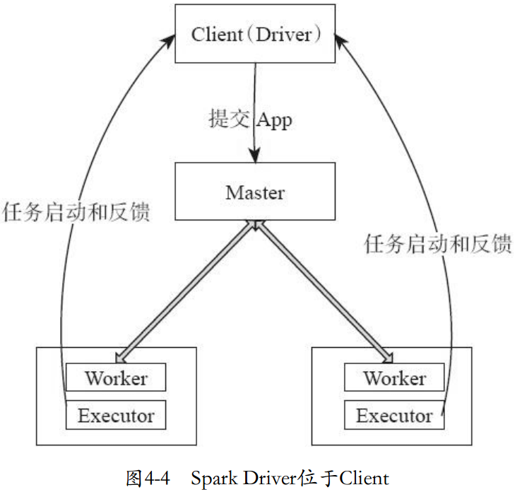

Spark任务执行的基本原理
April 11th, 2017 | by XD.Wang | database
Apr
11

本篇博客主要是讲解Spark内部具体是怎样工作的。如果读者有机会用到了Spark， 了解它的工作原理有助编写性能更好的任务脚本、解决一些技术层面的问题。即使以后不接触大数据的相关工作，学习分布式计算的实现， 对补全自己的知识体系也是有帮助的。
这篇博客包括三个部分，第一部分是计算模型，简单描述一个Spark脚本一般该怎么写；第二部分讲Spark的执行机制， 说明了当脚本写成后，Spark是如何把我们的程序，转换成可在集群中分布式执行的任务；第三部分是任务管理，描述了在执行这些任务时， Spark通过怎样的管理办法，提高了任务的执行速度、增加了系统的吞吐量。
- 第一部分：计算模型
- 第二部分：框架设计
- 第三部分：执行机制
计算模型
首先讲一下Spark的计算模型。从设计流程来看，Spark脚本和其他程序一样，都可概括为输入数据、 处理数据、输出数据三步。Spark支持从HDFS、本地文件系统、数据库等来源读取数据，并将数据包装成一个叫做RDD的数据结构。 RDD全称为弹性分布式数据集，可简单理解成一个数组，它是Spark编程的核心，所有的业务逻辑都是围绕着对RDD的操作完成的。 和输入数据一样，处理完RDD后，我们可将RDD中承载的结果写回HDFS、本地文件系统或者是数据库。编写完这三个步骤， 一个基本的Spark脚本也就写好了。
刚才说过，业务逻辑都是通过操作RDD来实现的，为了简化Spark的编程模型， Spark中定义了很多用来操作RDD的算子，算子分两类，一类叫变换算子，它们可以变换RDD里的数据，如规约RDD中的内容； 第二类叫行动算子，他们将促使RDD做出某种行动，比如说写出到文件、统计RDD内成员数目等。算子本质上就是一个函数， 函数接受一个RDD做输人，经过映射输出一个RDD，经过一个个算子的处理，数据慢慢就变成了我们想要的样子。
从逻辑角度来看，RDD被划分成了多个分区，并分布到Spark集群当中， 这些分区可能对应着同一块内存或磁盘，也可能对应着不同的磁盘或内存，这种灵活的映射方式使Spark管理空间更加高效。
从物理角度来看，RDD的每个分区对应着一个叫Block的物理空间，这些物理空间里存储着RDD所有数据的一个子集， Block存储在内存中，也可存储在硬盘里。而RDD负责维护着节点与Block的映射关系。
在构建RDD时，Spark分区策略是可以自定义的，比如哈希取余分区，按数据范围分区等等。 分区是Spark编程中的重要概念，很多算子操作都涉及到了分区，了解RDD内部的分区结构对编写高质量Spark程序非常重要。
框架设计

了解了Spark的计算模型，接下来的内容本该描述下Spark是如何运行已经写好的程序的， 但在这之前，需要先学习Spark内部的框架设计。在Spark模型中，我们写好的脚本称作一个应用，Spark可以在集群中执行这个应用， 也可选择单机执行这个应用。当在集群中执行应用时，Spark如何运行任务，也就 是Spark的运行模式， 与我们选择什么样的Cluster Manager的选择密切相关。Cluster Manager是Spark框架模型中非常重要的一个组成部分， 我们可以通过它从集群中获取资源，简单来讲Cluster Manager就是一个获取资源的服务，根据Cluster Manager的实现不同， 任务的运行模式可以分为Standalone、Yarn、Mesos等几种模式，Standalone、Yarn、Mesos都是集群资源管理器的一种具体实现， 如果大家对集群做资源管理感兴趣的话，可以去了解下这几个组件。
除了应用以外，应用在执行中还涉及到如下几个概念。第一个是驱动程序， 它本质上是一个用来和集群资源管理器交互的Spark Context，所谓驱动程序，其实就是这个Spark任务的起点， 一切都从这里开始，大多数业务无关的工作、比如任务分配、生成Stage并调度Task到Executor上等工作都是它要做的。 第二个是RDD图，一个行动算子会使之前程序中出现的所有算子通过某种算法构建出一个有向无环图，从算法层次上表现我们的业务逻辑。 第三个概念是Job，Job是对有向无环图的一层包装，Spark可以加载Job来处理相应有向无环图中定义的算法。 一个Job可以被划分为多个Stage，Stage是一组相同Task的集合，Task是最小的工作单元，Spark的执行器Executor通过调用Task来执行有向无环图中的算子。 最后是Master和Worker的概念，Master主要负责接收提交过来的作业，并命令它管理下的Worker开启执行器去处理这些作业， 而Worker是利用自己资源真正去执行业务逻辑的节点。
执行机制
了解了Spark内部框架设计和计算模型，接下来说明下应用具体是如何提交并执行的。
在Spark中，有一个主控进程叫Driver进程，它是SparkContext的载体， 它负责从Cluster Manager申请资源、将Job切分成Stage并分配到不同的执行器去执行。Driver进程可在客户端运行， 也可在某个集群的工作节点上运行。当Driver在客户端运行时，一次应用执行的过程可以概况为六步：

- 用户启动客户端并开启Driver进程
- 客户端的Driver注册到Master上
- Worker也注册到Master上
- Master启动Worker
- Worker将自己注册到Driver
- Driver通过Worker执行任务
当Driver在Worker中运行时，大体流程和前一种模式相同，唯一不同的在于， Driver进程开启的位置不同，这种模式的执行过程是：

- 用户启动客户端
- 客户端将应用程序上传给Master
- Master指定某个Worker开启Driver进程
- Master启动其他Worker
- 开启Driver进程的Worker通过其他Worker执行任务